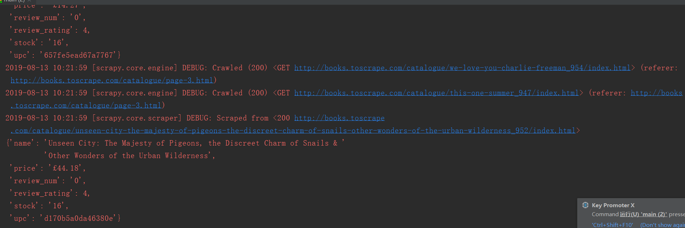

Contents
23.3.10. 数据库：SQLite篇¶
①创建scrapy 爬虫项目
scrapy startproject books
cd books
#利用模板生成spider文件
scrapy genspider booksspider booksspider.toscrape.com
②创建SQLite数据库
createDB.py
#!/usr/bin/env python
#-*- coding:utf8 -*-
# auther; 18793
# Date：2019/8/13 9:43
# filename: createDB.py
# -*- coding: utf-8 -*-
import sqlite3
#连接数据库，得到Connection对象
conn = sqlite3.connect('scrapy.db')
#print(type(conn))
#创建Cursor对象，用于执行SQL语句
cur = conn.cursor()
#print(type(cur))
#创建数据表
cur.execute(''' CREATE TABLE books(
upc CHAR(16) NOT NULL PRIMARY KEY,
name VARCHAR(256) NOT NULL,
price VARCHAR(16) NOT NULL,
review_rating INT,
review_num INT,
stock INT
);''')
#插入一条数据
# cur.execute('INSERT INTO person VALUES(?,?,?)',('李小龙',23,'M'))
#保存变更，commit后数据才会实际写入数据库
conn.commit()
#关闭连接
conn.close()

booksspider.py 蜘蛛文件内容如下：
# -*- coding: utf-8 -*-
import scrapy
from books.items import BooksItem
from scrapy.linkextractors import LinkExtractor
class BooksspiderSpider(scrapy.Spider):
name = 'booksspider'
allowed_domains = ['books.toscrape.com']
start_urls = ['http://books.toscrape.com/']
def parse(self, response):
##提取每本书的链接
le = LinkExtractor(restrict_xpaths='//article[@class="product_pod"]') ##具体位置在//article/div/a的标签中
detail_urls = le.extract_links(response)
for detail_url in detail_urls:
yield scrapy.Request(detail_url.url, callback=self.parse_book) ##记得使用.url提取出extract_links里面的链接。
##提取下一页的链接
le2 = LinkExtractor(restrict_xpaths='//li[@class="next"]')
next_url = le2.extract_links(response)[0].url
yield scrapy.Request(next_url, callback=self.parse)
def parse_book(self, response):
##提取每本书的具体信息
item = BooksItem()
info = response.xpath('//div[contains(@class,"product_main")]')
item['name'] = info.xpath('h1/text()').extract()[0]
item['price'] = info.xpath('p/text()').extract()[0]
item['review_rating'] = info.xpath('p[3]/@class').re('star-rating (\w+)')[0]
info2 = response.xpath('//table[contains(@class,"table")]')
item['upc'] = info2.xpath('//tr[1]/td/text()').extract_first()
item['stock'] = info2.xpath('//tr[6]/td/text()').re_first('\d+')
item['review_num'] = info2.xpath('//tr[7]/td/text()').extract_first()
yield item
pipelines.py
# 爬取到的数据写入到SQLite数据库
import sqlite3
class SQLitePipeline(object):
# 打开数据库
def open_spider(self,spider):
db_name = spider.settings.get('SQLITE_DB_NAME','scrapy.db')
self.db_conn = sqlite3.connect(db_name)
self.db_cur = self.db_conn.cursor()
# 关闭数据库
def close_spider(self,spider):
self.db_conn.commit()
self.db_conn.close()
# 对数据进行处理
def process_item(self,item,spider):
self.insert_db(item)
return item
# 插入数据
def insert_db(self, item):
values = (
item['upc'],
item['name'],
item['price'],
item['review_rating'],
item['review_num'],
item['stock']
)
sql = 'INSERT INTO books VALUES(?,?,?,?,?,?)'
self.db_cur.execute(sql,values)
##处理review_rating的pipeline
class BooksPipeline(object):
review_rating_map = {
'One':1,
'Two':2,
'Three':3,
'Four':4,
'Five':5
}
def process_item(self, item, spider):
# rating = item.get('review_rating') #获取review_rating的数据
rating = item['review_rating'] #与上面的语句等价
item['review_rating'] = self.review_rating_map[rating]
return item
settings.py: 启用SQLitePipeline
SQLITE_DB_NAME = 'scrapy.db'
ITEM_PIPELINES = {
'books.pipelines.BooksPipeline': 300, #原有的pipeline
'books.pipelines.SQLitePipeline': 400, #SQL的pipeline
}
items.py
import scrapy
class BooksItem(scrapy.Item):
name = scrapy.Field() #书名
price = scrapy.Field() #价格
review_rating = scrapy.Field() #评价等级（1-5星）
review_num = scrapy.Field() #评价数量
upc = scrapy.Field() #产品编码
stock = scrapy.Field() #库存量
运行cmd命令：scrapy crawl booksspider
或者写成main.py入口程序，如下：
#!/usr/bin/env python
#-*- coding:utf8 -*-
# auther; 18793
# Date：2019/8/13 10:17
# filename: main.py
from scrapy import cmdline
cmdline.execute("scrapy crawl booksspider".split())
执行爬虫程序后，查看结果如下： 